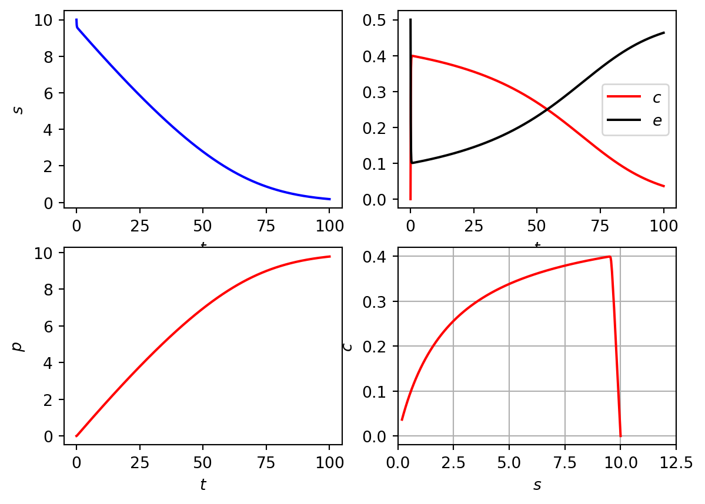

Code
import numpy as np
import matplotlib.pyplot as plt
import scipy
from scipy.integrate import odeint
k_1=1.0
k_2=0.4
k_m_1=2.0
s_0=10.0
e_0=0.5
p_0=0
c_0=0
def rhs_bruss_model(z,t):
rhs=np.zeros_like(z)
s=z[0]
e=z[1]
c=z[2]
p=z[3]
ds_dt= -k_1*s*e + k_m_1*c
de_dt= -k_1*s*e + k_m_1*c + k_2*c
dc_dt= k_1*s*e - k_m_1*c - k_2*c
dp_dt= k_2*c
rhs[0]=ds_dt
rhs[1]=de_dt
rhs[2]=dc_dt
rhs[3]=dp_dt
return rhs
t = np.linspace(0, 100, 1000)
init_cond=[s_0,e_0,c_0,p_0]
sol1 = odeint(rhs_bruss_model, init_cond,t)
s=sol1[:,0]
e=sol1[:,1]
c=sol1[:,2]
p=sol1[:,3]
fig, ax=plt.subplots(2,2)
ax[0,0].plot(t, s, 'b')
ax[0,0].set_xlabel('$t$')
ax[0,0].set_ylabel('$s$')
ax[0,1].plot(t,c,'r',t,e,'k')
ax[0,1].set_xlabel('$t$')
ax[0,1].legend(['$c$','$e$'])
ax[1,0].plot(t,p,'r')
ax[1,0].set_xlabel('$t$')
ax[1,0].set_ylabel('$p$')
ax[1,1].plot( s, c,'r')
ax[1,1].set_xlim([0,1.25*s_0])
ax[1,1].set_xlabel('$s$')
ax[1,1].set_ylabel('$c$')
plt.grid()
plt.show()